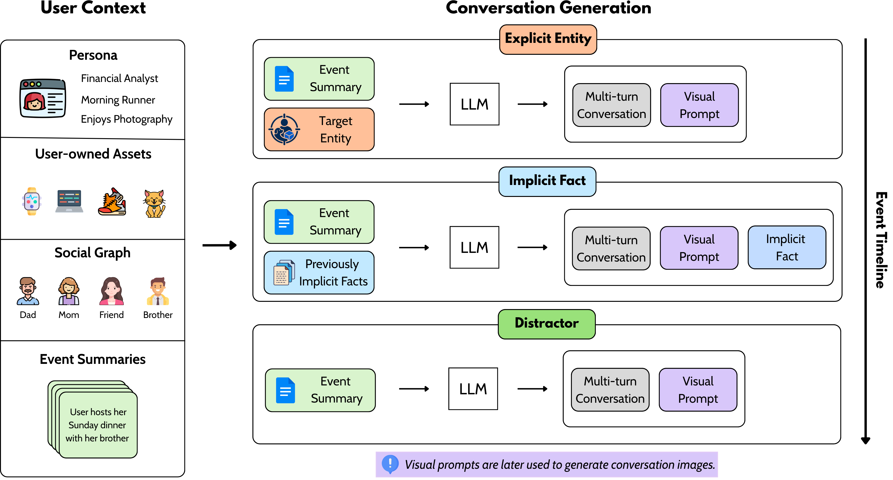
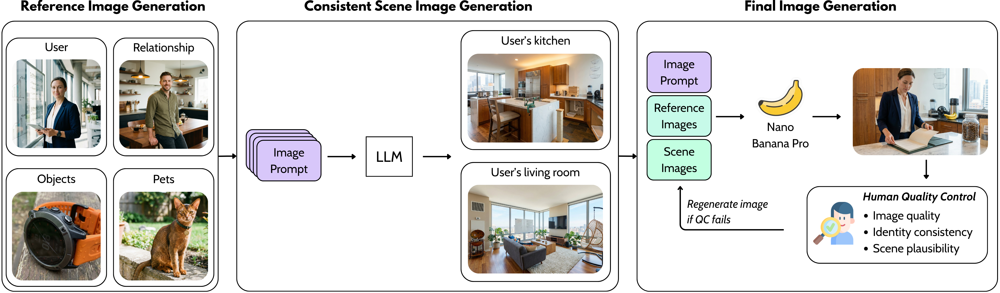
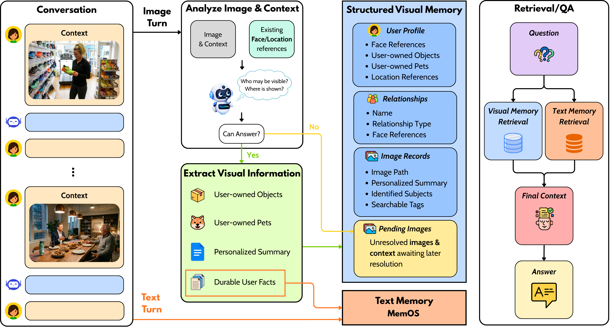

Long-term memory is increasingly important for personalized AI agents, yet existing benchmarks and methods remain largely text-centric. Even when images are included, the user-specific information needed for later questions is often recoverable from text alone, and most memory systems reduce image turns to generic captions. Yet images often carry personal information that text rarely states: explicit evidence such as recurring user-associated entities, and implicit evidence such as latent user facts inferred from visual or multimodal cues.
We introduce a benchmark for personal visual memory that targets both forms of evidence, and propose VISUALMEM, a hybrid visual-text architecture that augments a text-memory backend with a structured personal visual memory module. Rather than collapsing images into captions, VISUALMEM uses conversational context to resolve identity, ownership, and durable user facts. Experiments show that VISUALMEM substantially outperforms prior memory systems on our benchmark while remaining competitive on standard text-memory benchmarks, indicating that personal visual memory is a distinct and important component of long-term memory for personalized AI agents.

VisualMem introduces personal visual-memory tasks where decisive evidence comes from images: explicit entity and implicit fact.
Prior memory benchmarks mainly test facts explicitly stated in dialogue or inferable from text alone. This overlooks personal information that appears only in shared images.
Captions can omit identity, ownership, recurrence, and small visual details that are essential for personalized memory over long conversations.
A memory agent should retain persistent visual evidence and update it as more images and context become available.
The benchmark is built from persistent user personas, recurring social contacts, user-owned assets, event timelines, multimodal conversations, and globally consistent generated images.

Conversation generation creates explicit entity, implicit fact, and distractor interactions from a persistent persona context.

Images are generated with consistent entity references, location-level scene references, and human quality control.

VISUALMEM analyzes images with dialogue context, stores structured personal visual memory, and combines visual retrieval with text-memory retrieval at question time.
|
1️⃣ Context-guided interpretation
Each image is interpreted jointly with surrounding conversation, helping resolve who is visible, whose space is depicted, and whether the image is personally relevant. |
2️⃣ Deferred commitment
Ambiguous images are stored in a pending state and revisited later when more memory evidence becomes available, reducing premature or noisy extractions. |
3️⃣ Structured extraction
Confirmed images produce structured memories over relationships, recurring entities, user-owned objects or pets, locations, and durable visual facts. |
| Method | Tokens | Target Person ↑ | Target Asset ↑ | Implicit Fact Visual-Only ↑ |
Implicit Fact Multimodal ↑ |
Overall ↑ |
|---|---|---|---|---|---|---|
| Naive LLM | ||||||
| Full Context | 325K | 100.0 | 94.6 | 91.4 | 98.0 | 95.1 |
| Oracle | 1900 | 100.0 | 99.1 | 97.9 | 98.5 | 98.6 |
| RAG-based Methods | ||||||
| Self-RAG | 2000 | 21.0 | 35.0 | 17.1 | 22.1 | 22.1 |
| HippoRAG2 | 1000 | 25.0 | 26.5 | 25.4 | 32.7 | 27.6 |
| Memory-based Methods | ||||||
| LightMem | 500 | 30.0 | 40.2 | 45.4 | 58.8 | 46.1 |
| SimpleMem | 500 | 3.0 | 40.2 | 42.9 | 43.2 | 36.8 |
| Mem0 | 500 | 38.0 | 33.9 | 40.8 | 57.9 | 45.0 |
| MemOS | 1187 | 45.0 | 59.9 | 52.1 | 64.8 | 56.0 |
| VISUALMEM (Ours) | 1980 | 95.0 | 91.1 | 77.9 | 83.4 | 84.1 |
VISUALMEM preserves recurring visual identities and user-owned assets, showing the value of storing structured visual memory instead of generic captions.
VISUALMEM improves both visual-only and multimodal implicit-fact settings by retaining visual cues and connecting them to dialogue context.
On text-centric long-term memory benchmarks, VISUALMEM remains comparable to its MemOS text-memory backend while adding visual memory capability.
| Method | LOCOMO ↑ | PersonaMem ↑ |
|---|---|---|
| MemOS | 56.8 | 45.5 |
| VISUALMEM | 58.1 | 46.3 |
| Text | Visual | Pending | Window | Tokens | Target Person ↑ | Target Asset ↑ | Implicit Fact Visual-Only ↑ |
Implicit Fact Multimodal ↑ |
Overall ↑ |
|---|---|---|---|---|---|---|---|---|---|
| ✓ | ✓ | 2 | 1901 | 60.0 | 90.2 | 79.6 | 74.2 | 76.9 | |
| ✓ | ✓ | 2 | 1247 | 40.4 | 65.2 | 60.0 | 67.3 | 60.1 | |
| ✓ | ✓ | 2 | 635 | 95.0 | 91.1 | 80.3 | 68.3 | 80.7 | |
| ✓ | ✓ | ✓ | 2 | 1882 | 95.0 | 91.1 | 76.1 | 76.9 | 81.5 |
| ✓ | ✓ | ✓ | Full | 1980 | 95.0 | 91.1 | 77.9 | 83.4 | 84.1 |
@article{nguyen2026visualmem,
title={Personal Visual Memory from Explicit and Implicit Evidence},
author={Nguyen, Viet and Nguyen, Thao and Patel, Vishal M and Li, Yuheng},
journal={arXiv preprint arXiv:2605.28806},
year={2026}
}